Modelling: faces, edges & vertices
Go beyond stacking parts: reach inside a builder mesh and push, cut, round and paint its faces, edges and corners — the kind of modelling Roblox Studio can't do — then fix its UVs and export it.
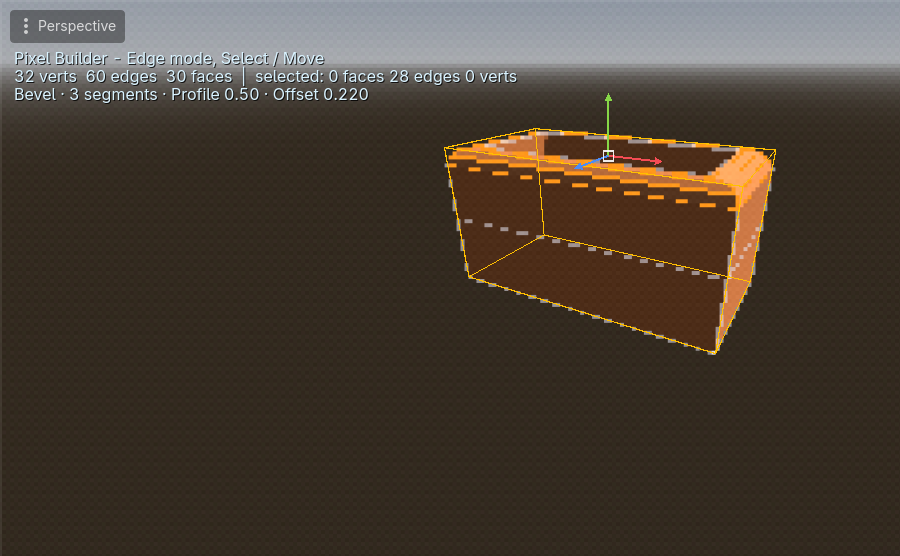
What you'll learn
- How to switch to the Edit tab of the Roblox-style ribbon, and what every button on it does.
- The four selection modes — Object, Face, Edge, Vertex — and how to pick, add to and grow a selection.
- Every mesh operation: Move, Extrude, Inset, Bevel, Loop Cut, Bridge, Merge, Connect, Fill, Triangulate, Duplicate, Delete — each with a clip — and the Adjust panel that appears after one.
- A complete crate walkthrough you can tick off step by step.
- Colour, painting and materials: the Color palette, the Paint tool, material slots and presets, vertex paint, smooth vs faceted shading.
- The UV editor, the export formats, and every preference in the Options dialog.
- How the three builder layouts — Roblox UI, MST and Modeler — differ, and a filterable shortcut reference covering all of them.
Roblox Studio has no mesh editing. You place Parts and resize or rotate them; the closest thing to "extrude" is dragging one side of a Part with the Scale tool, and anything fancier is modelled in Blender and imported as a MeshPart. The builder's Edit tab gives you real mesh editing right inside the editor — faces, edges, vertices, extrude, inset, bevel, loop cuts. If you've ever watched a Blender tutorial, this is that world's "edit mode". If you haven't, don't worry: this page starts from zero.
A few words first
You met nodes, the Inspector and the 3D view on the previous page (Greyboxing with the Roblox UI); if any Godot word on this page is new, Godot for Roblox builders and the glossary explain it. These are the new ones:
- Mesh
- The 3D shape of an object, made of flat pieces. Every part you insert with the builder is a mesh you can edit.
- Face
- One flat side of a mesh. A box has 6 faces.
- Edge
- The line where two faces meet (or the border of an open hole). A box has 12.
- Vertex (plural vertices)
- A corner point where edges meet. A box has 8.
- Normal
- The direction a face points "out" of the mesh. Extrude pushes faces along their normals.
- N-gon
- A face with more than four corners. Merging two side-by-side faces makes one.
- Edge loop / ring
- An edge loop is a chain of edges that runs all the way around a shape (like the rim of a cup). An edge ring is the set of parallel edges that cross it (like the rungs of a ladder bent into a circle).
- UVs
- How a flat picture (a texture) is wrapped onto the faces. U and V are just the names of the picture's horizontal and vertical axes.
- Material slot
- A numbered material (colour/texture) stored on the mesh. A mesh with several slots can have a different material on each face.
PixelBuilderMesh- The node type the builder edits — the "root" that holds your parts. Think of it as a Roblox Model whose children are editable meshes.
- Undo step
- One entry in Godot's History dock (next to FileSystem, bottom-left). Every operation on this page is exactly one step, so Ctrl+Z undoes one operation at a time.
Every builder shortcut on this page (E, Alt+3, Ctrl+B…) only works while the mouse pointer is over the 3D view. That's normal Godot behaviour: keys go to whatever panel is under the mouse. If a key "does nothing", move the mouse into the viewport and press it again.
The three layouts at a glance
The builder can wear three different "outfits". All three run the same commands on the same mesh — only the buttons and a few shortcuts differ — so you can switch whenever you like. Switching keeps your current mode, your selection and your full undo history, and the choice is saved in Editor Settings so it survives a restart.
- Roblox UI — a Roblox Studio-style ribbon with Model and Edit tabs. Turn it on with the Roblox UI toggle in the 3D-view menu bar (to the right of Pixel Preview · Animate · Pixel World). Its tooltip: "Roblox UI: show the modelling tools as a Roblox Studio-style ribbon with Roblox handles and shortcuts. Off: the regular Builder layout." This page teaches you on this one.
- MST — the classic builder: a left vertical toolbar, a right panel (Materials, Smoothing, Face UV) and a bottom strip. Materials and smoothing live here.
- Modeler — a horizontal top toolbar with a big + Add Mesh shape palette and an Actions menu; operations open small floating pop-ups in the viewport.
With Roblox UI off, you get MST or Modeler — pick which in the Builder menu (or Options). Click through the tabs to see each one:
Two ribbon tabs sit under the 3D menu bar. Model is the parts toolbox you used on page 9; Edit is the mesh-editing toolbox this page is about.
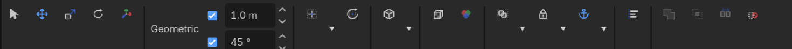
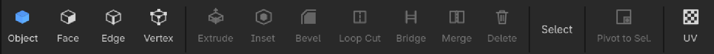
Shortcut differences: in this layout the bare number keys 1–5 are the tools (Select / Move / Scale / Rotate / Transform, just like Studio), so the selection modes move to Alt+1…Alt+4. F is Zoom to (like Studio's focus key), so Fill hole moves to Alt+F, and vertex paint to Alt+5.
Roblox UI off, layout set to MST. A left toolbar, a right panel and a bottom strip wrap around the 3D view. Click the markers:
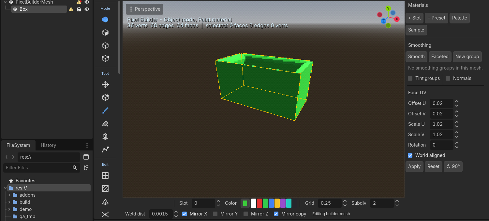
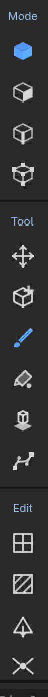
Left toolbar, top to bottom
- Mode: Object 1 · Face 2 · Edge 3 · Vertex 4
- Tool: Select/move W · Draw shape C (drag a footprint on the grid, then move up for height) · Paint B · Vertex paint 5 · Place on cell P · Bezier plane/block Shift+C
- Edit: Subdivide · Triangulate Ctrl+T · Flip normals · Weld
In MST the bare digits 1–4 are the modes, 5 is vertex paint and F is Fill hole.
Roblox UI off, layout set to Modeler — the "larger palette" layout. There's no left toolbar or right panel; instead a horizontal toolbar runs along the top of the 3D view:
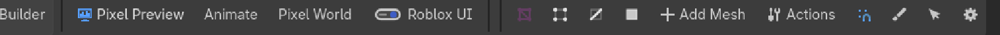
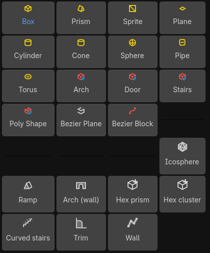
+ Add Mesh shapes
- Box
- Prism
- Sprite
- Plane
- Cylinder
- Cone
- Sphere
- Pipe
- Torus
- Arch
- Door
- Stairs
- Poly Shape
- Bezier Plane
- Bezier Block
- Icosphere
- Ramp
- Arch (wall)
- Hex prism
- Hex cluster
- Curved stairs
- Trim
- Wall
Actions menu bundles: Subdivide / Triangulate Faces, Merge Objects, Flip Faces, Conform Normals, Center Pivot, Freeze Transform, Mirror, Set Collider / Trigger, Generate Lightmap UVs, Create Reusable Part, UV Editor…, Export Mesh, Boolean, Place on cell, Weld, Assign material, New blend material, Invert alpha, Bake to MeshInstance3D, Shape parameters, Paint colour.
Operations such as Paint open a floating pop-up in the viewport (for example "Paint — Click or drag over faces… Options / Cancel / Done") instead of a docked strip. Modes and keys are the same as MST.
Model in whichever layout feels best, but you'll visit MST (or Modeler) for two things the Roblox ribbon doesn't have: the Materials panel (per-face materials) and the Smoothing panel. Flip Roblox UI off, do the job, flip it back — nothing is lost.
The Edit tab, button by button
Turn on Roblox UI, select your builder mesh, and click the Edit tab next to Model. The ribbon reads left to right as: who you're picking (modes) → what to do to it (operations) → selection helpers → pivot → UVs. Click the markers:
Why is everything grey? Operations light up only when you're in a mode that supports them and you have something selected. Hover a greyed button and its tooltip tells you why — e.g. "Use face selection mode." Drag the slider to step through the modes (nothing selected yet), then drag the divider in the second picture to see what selecting a face does:
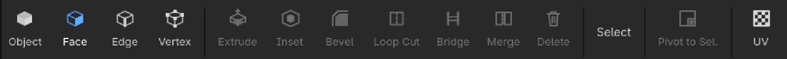
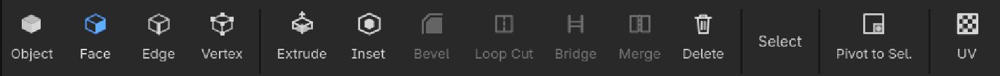
Selection modes and picking things
Before you can change part of a mesh you have to tell the builder which kind of piece you want to grab — that's the mode — and then click the pieces themselves.
| Mode | Roblox UI | MST / Modeler | You pick… | Operations it enables |
|---|---|---|---|---|
| Object | Alt+1 | 1 | whole meshes (move them with Godot's gizmo) | object actions only: Insert part, Lock, Anchor, Pivot, Union… |
| Face | Alt+2 | 2 | flat sides | Extrude, Inset, Merge, Delete, Pivot to Sel. |
| Edge | Alt+3 | 3 | lines between faces | Extrude, Bevel, Loop Cut, Bridge, Delete |
| Vertex | Alt+4 | 4 | corner points | Bevel, Merge, Delete |
Clicking, adding and box-selecting
- Click a face / edge / vertex to select just that one. It turns orange.
- Shift+click to add more. (Whether Shift adds, subtracts or toggles depends on the Shift selects preference — MST toggles, Modeler adds; see Options.)
- Drag on empty space to draw a selection box. Whether the box must fully enclose an element or just touch it is the Box selects preference.
- The hover highlight shows what a click would grab before you click — useful for thin edges.
- Watch the status line at the top-left of the 3D view: "8 verts 12 edges 6 faces | selected: 1 faces 0 edges 0 verts".
Edges and vertices are only a few pixels wide when you're zoomed out. Zoom in (mouse wheel) and wait for the hover highlight before clicking. If you keep missing, select a face next to the edge first to see where things are.
Growing a selection: the Select ▾ menu
Clicking every edge of a rim one by one is tedious. The Select ▾ menu (and its keys) grows a selection for you:
Select Loop
Selects the whole edge loop through the picked edge. Picking one rim edge of a box then pressing L selected the whole 4-edge top loop.
- Shortcut
- L
Select Ring
Selects the ring of parallel edges crossing the loop (1 → 4 edges on a box).
- Shortcut
- Alt+L
Grow
Adds every neighbour of the current selection. One top face grows to five (the top plus four sides).
- Shortcut
- G
Shrink
The reverse of Grow: drops the outer ring of the selection (five faces back to one).
- Shortcut
- Shift+G
Similar
Selects elements similar to the current selection. No keyboard shortcut.
Studio only selects whole Parts. The four modes are like Blender's vertex / edge / face select buttons — Roblox has nothing equivalent. Object mode is the one that behaves like Studio.
Guided tutorial: model an open crate
About 15 minutes. You'll turn a single box into a hollow crate with a rounded lip using four operations, then colour it. Tick each step as you go — your progress is remembered. The finished result is saved in the project as res://tutorial/guide/modelled_prop.tscn (res:// means "the project folder"; in the FileSystem dock, open tutorial → guide) if you want to compare.
A newly inserted part is solid Roblox Medium Stone Grey (RGB 163, 162, 165 — the same grey as a fresh Part in Studio) until you give it a colour or material. It does not copy the materials of whatever mesh you had selected. The one exception: if you picked a material from the Model tab's Material menu while nothing was selected, new parts use that material instead. The pictures on this page show the part coloured terracotta on a dark, empty background so the edits read clearly — your editor's shading may look a little different.
- Start an empty scene. Scene → New Scene, then in the Scene tree click Other Node, search for
PixelBuilderMeshin the Create New Node dialog and click Create. An empty scene keeps the background plain so your edits are easy to see. - Insert a box. Turn on Roblox UI, open the Model tab and click Part. A Box appears at the centre of the view.
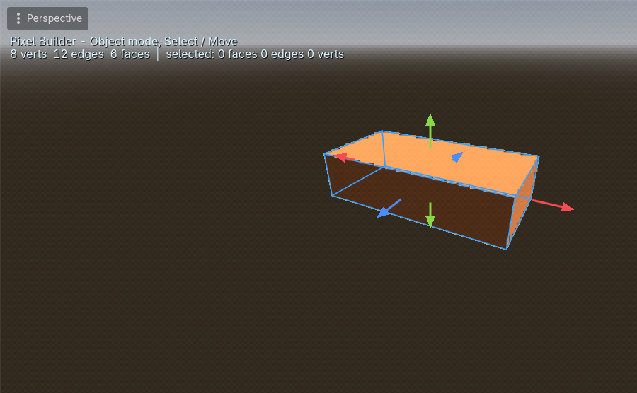
The starting box, already coloured terracotta. Watch out — set the size firstIf you want a different box size, change Size in the Inspector now. Changing Size later rebuilds the box and replaces all your face / edge edits (the Inspector warns: "Rebuilding replaces the element edits. Undo can restore them.").
- Colour it. Click Color on the Model tab, type
c8743cin the hex field (a terracotta orange) and click Apply. - Pick the top face. Move the mouse over the 3D view, press Alt+2 (Face mode) and click the box's top face. It turns orange and the status line reads selected: 1 faces.
- Extrude it up. Press E. The top rises and new side walls appear. In the Adjust Extrude panel set Dist to about
1and click Done. Now you have a tall box.Crate 1/4 — Face mode, select the top, Extrude up. 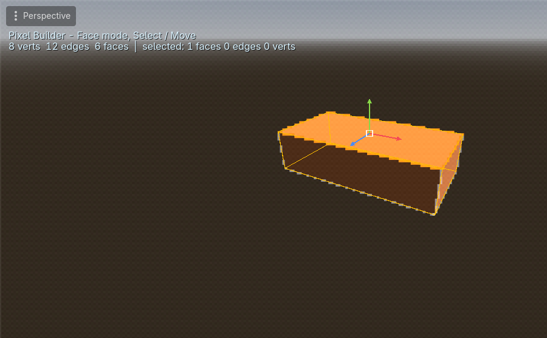
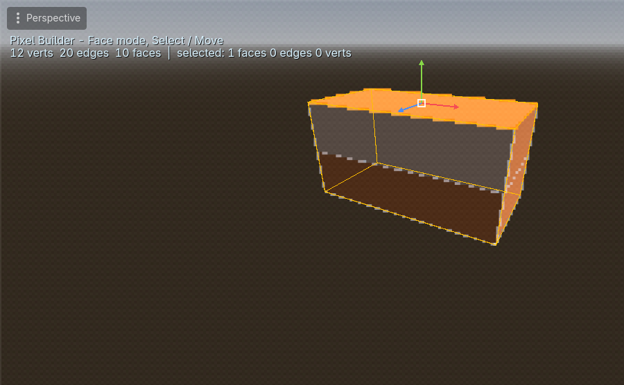
- Inset the top. With the top face still selected, press I. A smaller face appears inside the top with a rim around it. Leave Inset at about
0.2(Inset by: Fraction) and click Done.Crate 2/4 — Inset the top face to make a lid rim. 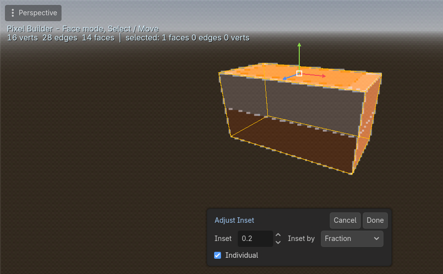
After Inset: 14 faces, the new inner face is selected; the Adjust Inset panel stays live until you press Done. - Push the inside down. Press E again and type a negative Dist (e.g.
-0.7) so the inner face sinks into the box. Click Done. The crate is now hollow.Crate 3/4 — hollowing the crate: with the inset face selected, Extrude opens the Adjust Extrude panel and Dist is typed as a negative number (-0.72) so the face sinks into the box instead of rising. The status line counts the new walls (10 → 18 faces). The adjust panel previews the move live; press Done to commit it. 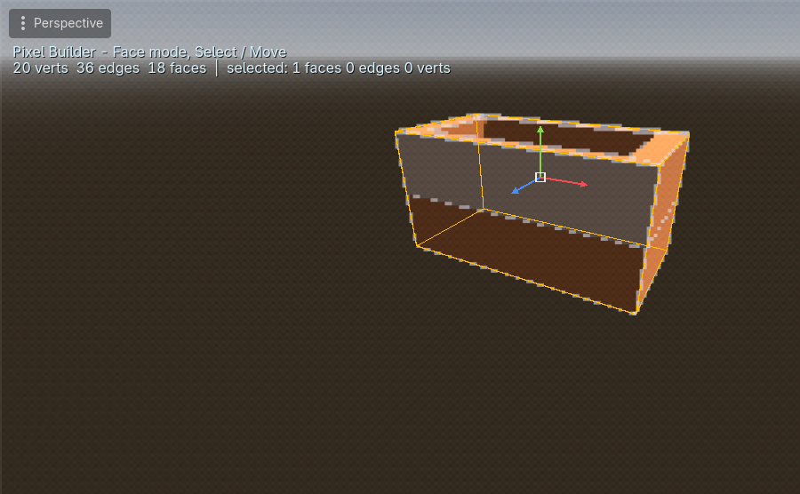
Hollow: 18 faces. - Select the outer rim. Press Alt+3 (Edge mode), click one of the four outer top edges, then press L (Select Loop). All four rim edges are selected — selected: 4 edges.
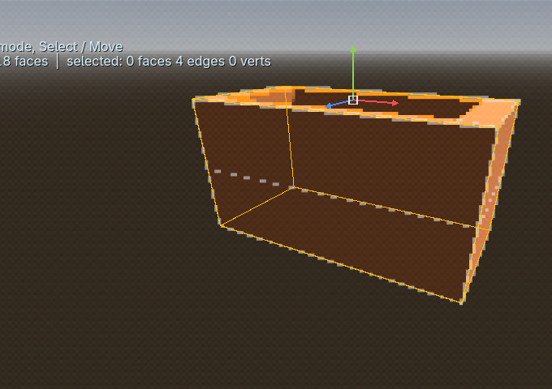
One click + L selects the whole rim loop. - Round the lip. Press Ctrl+B (Bevel). In Adjust Bevel set Segs to
3and Bevel to about0.22(Amount: Offset). Click Done.Crate 4/4 — the Bevel step in motion: Edge mode, L to select the rim loop, then Ctrl+B and Segs set to 3 with Bevel 0.22. The status line echoes it — Bevel · 3 segments · Profile 0.50 · Offset 0.220 — and the flat rim becomes a rounded lip. The rounded lip. The status line echoes the bevel settings: Profile 0.50 · Offset 0.220. - Check your undo history. Open the History dock (bottom-left, next to FileSystem). Each operation is one entry — Pixel Builder: Extrude, Inset, Bevel… Try Ctrl+Z once and Ctrl+Shift+Z to redo.
- Give it a new colour. Press Alt+1 for Object mode, pick a swatch in Color and click Apply — the whole crate changes colour. (For a different colour on each face, see painting with material slots.)

The finished crate, recoloured. - Save. Ctrl+S and name it, e.g.
my_crate.tscn. A.tscnis a saved scene — like a Roblox model file you can drop into other scenes.
Open the finished example, res://tutorial/guide/modelled_prop.tscn, and look at the Inspector's Editable Mesh section: 36 vertices, 68 edges, 34 faces. Select its Box child, switch to Face mode and click around to see how the crate is built. When you're happy, try exporting it as a GLB file.
Every mesh operation
Each operation below is a single undo step and shows the action name you'll see in the History dock. Operations marked with an Adjust panel open a small live panel in the viewport right after you run them: change the numbers and watch the mesh update, then click Done to keep it or Cancel / Esc to throw it away. (You can turn the Adjust panel off in Options — then operations apply at once with their last settings.)
Move (select / move tool)
Select faces, edges or vertices and drag the coloured arrows to move just those pieces; the rest of the mesh stretches to follow. A live readout shows the offset, e.g. (0, 1, 0).
Same arrows as Studio's Move tool — red X, green Y, blue Z — but they move only the selected piece of the mesh, not the whole Part. Use [ / ] to halve or double the grid step while you drag.
Extrude
Pushes the selection along its normal and builds the connecting side walls. Faces go along their normals; open (border) edges go outwards. Use it to pull out legs, handles, chimneys — or, with a negative distance, to dig holes.
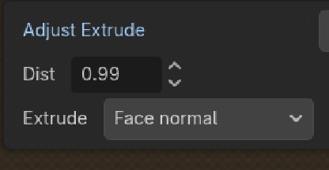
Dist
How far to push, in metres. Negative pushes inward (a recess).
Extrude (method)
Face normal — the selection moves as one along the faces' normals. Vertex normal — as one, along averaged vertex normals (good for curved selections). Individual — every face along its own normal (each face becomes its own little block). Edges extrude as a group.
Cancel / Done
Throw the operation away, or keep it.
Inset
Makes a smaller face inside each selected face, with a rim around it. Inset then Extrude is the classic way to make panels, windows, lids and frames.
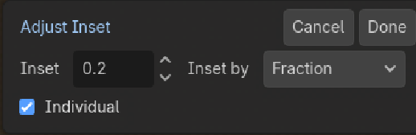
Inset
The amount — a fraction toward the centre, or a rim width in metres, depending on Inset by.
Inset by
Fraction — corners move toward the centre. Width — a rim this many metres wide. Equal — a rim of the same width everywhere with mitred (angled) corners.
Individual
On: inset every selected face on its own. Off: connected faces inset together as one group (one rim around the whole patch).
Bevel
Cuts off a sharp edge (Edge mode) or corner (Vertex mode). One segment makes a flat chamfer; more segments make a round edge. Where several selected edges meet in a rim, their corners are inset neatly.
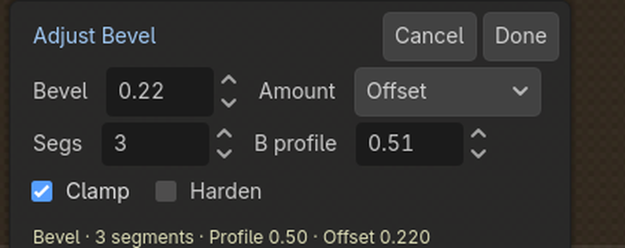
Bevel
The size of the bevel, measured as set by Amount.
Amount
Offset — distance from the original edge. Width — width of the new face. Depth — depth of the cut. Percent — 0–100 % of the neighbouring edge's length.
Segs
Number of segments. 1 = chamfer, more = rounder.
- Range
- 1 – 32
B profile
Shape of the rounding. 0.5 is circular; lower is concave (scooped), higher is convex / boxy.
Clamp
Clamp overlap: stops a big bevel from pushing past neighbouring geometry.
Harden
Harden normals so the flat faces next to the bevel keep crisp shading.
Loop Cut
Slices a new edge loop all the way around the shape, across the ring of four-sided faces through the selected edge. Use it to add detail exactly where you need it — a band around a barrel, a split for a door, extra edges before bending.
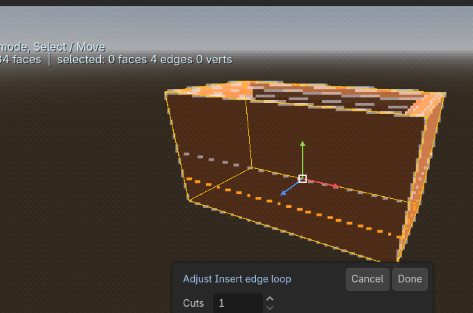
Bridge
Joins two open (border) edges, or two equal-length runs of open edges, with new faces. Use it to close the gap between two openings — e.g. connect two holes to make a tunnel. (No clip: there's no default shortcut; click Bridge on the Edit tab.)
Merge
Face mode: fuses the selected faces into one n-gon. Vertex mode: collapses the selected vertices into one point.
Connect
Draws a new edge between two selected vertices across a face, splitting it in two. Great for adding a diagonal or a custom cut where a full loop would be too much.
Fill hole
Select the border loop of an open hole and Fill caps it with a new face. An Adjust Fill-hole panel follows.
In the Roblox layout, plain F is Zoom to, just like focusing a Part in Studio. That's why Fill moves to Alt+F there.
Triangulate
Splits the selected faces into triangles. Useful before exporting to tools that want triangles, or to control exactly how a bent quad folds. Also in MST's left toolbar (Edit section) and the right-click menu's Build section.
Duplicate and Delete
Duplicate copies the selected elements in place (move the copy with the arrows). Delete removes the selected faces, edges or vertices — deleting a face leaves a hole you can later Fill or Bridge.
Pivot to Sel., grid step and cancelling
- Pivot to Sel. (Edit tab, element modes) moves the node's origin to the centre of the selected elements — so rotating or scaling the object later pivots around that spot.
- [ / ] halve / double the grid step (e.g. 1.0 m → 2.0 m) while you edit.
- Esc (or Cancel) cancels the current operation: the Adjust panel closes and the change is discarded.
- Ctrl+Z undoes the last committed operation — always exactly one operation.
Shortcut & operation reference
Every key on this page, in one table. Type to filter (try face, alt or paint). Every one of them needs the mouse over the 3D view.
| Roblox UI | MST / Modeler | Action | Modes / notes |
|---|---|---|---|
| 1–5 | — | Tools: Select / Move / Scale / Rotate / Transform | Roblox layout only (Model tab) |
| Alt+1 | 1 | Object mode | whole meshes |
| Alt+2 | 2 | Face mode | pick faces |
| Alt+3 | 3 | Edge mode | pick edges |
| Alt+4 | 4 | Vertex mode | pick vertices |
| H | H | Cycle modes | Object → Vertex → Edge → Face → Object |
| — | W | Select / move tool | any mode |
| E | E | Extrude | Face, Edge · Adjust panel (Dist, method) |
| I | I | Inset | Face · Adjust panel (Inset, Inset by, Individual) |
| Ctrl+B | Ctrl+B | Bevel | Edge, Vertex · Adjust panel (amount, Segs, profile…) |
| Ctrl+R | Ctrl+R | Loop Cut (insert edge loop) | Edge · Adjust panel (Cuts) |
| button | — | Bridge | Edge · no default key |
| M | M | Merge (faces → n-gon / vertices → one) | Face, Vertex |
| J | J | Connect two vertices | Vertex |
| Alt+F | F | Fill hole | Edge (boundary loop) · Adjust panel |
| F | — | Zoom to selection | Roblox layout |
| Ctrl+T | Ctrl+T | Triangulate faces | Face |
| Ctrl+D | Ctrl+D | Duplicate | element modes |
| Delete | Delete | Delete faces / edges / vertices | Face, Edge, Vertex |
| G | G | Grow selection | 1 → 5 faces on a box |
| Shift+G | Shift+G | Shrink selection | 5 → 1 faces |
| L | L | Select Loop | Edge · 1 → 4 edges (rim) |
| Alt+L | Alt+L | Select Ring | Edge · 1 → 4 edges |
| menu | menu | Select Similar | Select ▾ menu only |
| [ / ] | [ / ] | Halve / double grid step | e.g. 1.0 → 2.0 m |
| Esc | Esc | Cancel the current operation / Adjust panel | change discarded |
| B | B | Paint tool (paint material) | Shift+click fills coplanar region, Ctrl+click picks a face's slot |
| Alt+5 | 5 | Vertex paint tool | soft brush |
| — | C | Draw shape | MST tool: drag a footprint, move up for height |
| — | Shift+C | Bezier plane / block | MST tool |
| — | P | Place on cell | MST tool |
| U | U | Open the UV editor | also the UV button / Inspector |
| Ctrl+Shift+G | Ctrl+Shift+G | Union | Object mode · booleans |
| Ctrl+Shift+I | Ctrl+Shift+I | Intersect | Object mode · booleans |
| Ctrl+Shift+U | Ctrl+Shift+U | Separate | Object mode · booleans |
| Ctrl+Shift+N | Ctrl+Shift+N | Negate | Object mode · booleans |
| Ctrl+G | Ctrl+G | Group as Model | right-click menu |
| Ctrl+Alt+G | Ctrl+Alt+G | Group as Folder | right-click menu |
| Ctrl+U | Ctrl+U | Ungroup | right-click menu |
| Ctrl+Z | Ctrl+Z | Undo one operation | History dock |
Colour, painting & materials
The Color palette (whole mesh)
The quickest way to colour a part is the Color button on the Model tab. It opens a hexagon colour wheel:
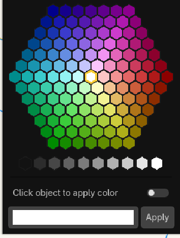
- Hexagon swatches — click one to set the builder's active colour.
- Grey row — black through white.
- Hex field — type an exact colour, e.g.
c8743c. - Apply — paints the whole selected mesh in the active colour.
- Click object to apply color — toggle on, then click objects in the view to colour them.
The Paint tool and why a fresh part paints all over
Press B for the Paint tool (the status line says Paint material). Clicking a face paints it with the active colour and material slot. But a freshly inserted part has 0 material slots, and on such a mesh colour is per-mesh: clicking any face recolours the entire part. Drag the slider:
Painting individual faces is a Materials-panel feature, not a one-click thing on a fresh part. First give the mesh at least one material slot (MST / Modeler → Materials → + Slot or + Preset), then each face paints on its own.
The Materials panel (MST / Modeler)
Switch Roblox UI off to reach the right-hand panel. Tour it:
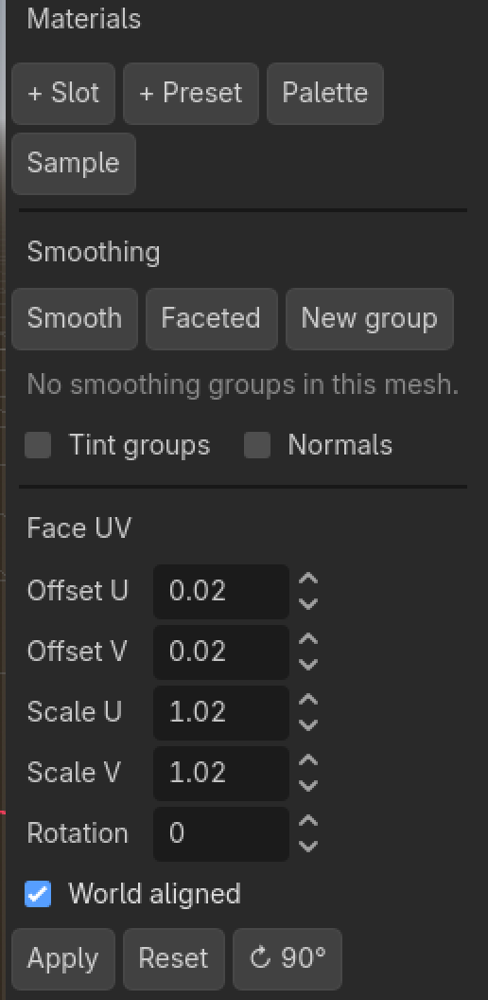
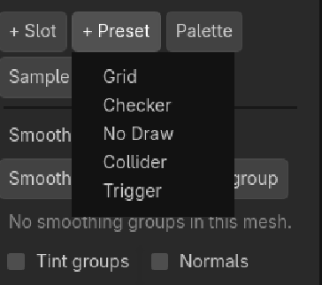
Presets
- Grid — a grid texture: great for judging scale while you model.
- Checker — a checker texture: shows UV stretching at a glance.
- No Draw — faces with this slot aren't drawn.
- Collider — marks faces as collision.
- Trigger — marks faces as a trigger area.
Paint tool modifiers (MST / Modeler)
The full tooltip: "Click or drag over faces to give them the current material slot and color. Shift+click fills the coplanar region, Ctrl+click picks the slot of a face."
- Click / drag — paint faces with the current slot + colour.
- Shift+click — flood-fill every connected face in the same flat plane.
- Ctrl+click — pick (eyedrop) the slot of the clicked face. Sample does the same for the whole selection.
- The bottom strip's Slot number and Color swatches set what you paint with.
You can also reach Paint colour and Assign material from the right-click menu's Paint section (and the Modeler Actions menu).
Vertex paint
Press 5 (MST / Modeler) or Alt+5 (Roblox) for the Vertex paint tool: a soft round brush that blends colour across the surface instead of filling whole faces. Its bottom-strip controls are Apply (Brush), Channel (RGBA), Radius and Strength.
Smooth vs faceted
Select faces, then click Smooth for soft, rounded-looking shading or Faceted for crisp, flat shading. Faceted suits blocky pixel-art props; Smooth suits barrels and rounded bevels. New group puts the selected faces in their own smoothing group so they shade separately from the rest.
In Studio you set a Part's Material and Color in Properties and the whole Part changes. A fresh builder part works the same way. The difference: once you add material slots, one mesh can carry many materials — one per face — which a single Roblox Part can't.
The UV editor
UVs decide how a texture lies on each face. Open the Pixel Builder – UV Editor window with U, the UV button on the Edit tab, or Open UV Editor in the Inspector. The window is resizable. Tour it:
![The Pixel Builder – UV Editor window: rows of buttons (Faces, Verts, Manual, Auto, Planar, Box, Spherical, Flip U, Flip V; Rot 90, Fit, Fit U, Fit V, Sew, Copy, Paste, Texel, Island, Frame; Frame Sel, Lock 0-1, Split, Snap, Tile, Step 0.063 and two 1.0 fields; Scale), an Auto UVs row (Tile, No anchor, Flip U, Flip V, Swap UV, Group, Apply Auto), Template 1024 with Grid ticked, Transparent and Export UV Template…, a dark grid canvas with green outlines of the unwrapped faces, a status line '34 faces (0 manual), 0 corners selected', and gesture help text.](media/10-builder-modeller/40-uv-editor.png)
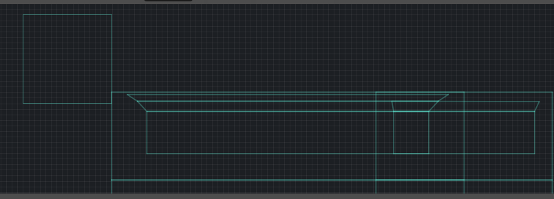
Canvas gestures
| Gesture | Does |
|---|---|
| Drag | Move the selected UVs |
| Ctrl+drag | Scale (add Shift to scale one axis) |
| Alt+drag | Rotate |
| Middle-drag | Pan the canvas |
| Wheel | Zoom |
| Double-click | Select a face's whole island |
| Ctrl+click a face | Stitch it to the first selected face |
| Ctrl+Shift+click | Copy that face's layout onto it |
| Esc | Cancel |
Moving, scaling and rotating by dragging works on Manual UVs. If dragging seems to do nothing, click Manual first to bake the automatic projection into editable corners, select faces (or corners), and add a Checker preset so you can actually see the texture move.
The Inspector for a builder mesh
Select a builder part and the Inspector (right dock — Godot's Properties window) shows builder sections:
Part — Appearance
Color, Material, Transparency — like a Roblox Part's appearance properties.
Part — Transform
Size x / y / z (edits the part's recipe — see the warning below), Position, Orientation, Pivot Offset.
Part
Shape, Locked, Anchored ▸ terrain.
Behavior
Collision (None / …).
Editable Mesh
A live count — "N vertices, M edges, K faces" — and the number of material slots.
Shape
Carries the rebuild warning "Rebuilding replaces the element edits. Undo can restore them." and an Edit Shape button.
UV & Lightmap
Open UV Editor, Generate Lightmap UVs.
Collision
Current: Detail, Set Collider, Set Trigger, and a Collision: On checkbox lower down. The Collider / Trigger material presets and right-click menu do the same per object.
Changing Size (width / height / depth) on a part you've already edited rebuilds the box from scratch and replaces your face / edge / vertex edits. Ctrl+Z brings them back. Rule of thumb: size the box first, then model it.
The right-click menu
Right-click a builder mesh in the 3D view for a menu of object-level actions. Filter it:
There's no picture of this menu yet, and not every entry below has been checked click-by-click. Every entry is also reachable from the ribbon, the Builder menu or the Modeler Actions menu.
Duplicate · Delete
Copy or remove the object.
Group as Model · Group as Folder · Ungroup
Ctrl+G / Ctrl+Alt+G / Ctrl+U — like Roblox's Group as Model / Folder.
Select children
Select every child of the object.
Union · Intersect · Negate · Separate
Booleans: Ctrl+Shift+G / I / N / U. Results stay editable meshes (see page 9).
Zoom to · Lock · Make Editable · UV Editor…
Frame the object, lock it, make it editable, open the UV editor (U).
Build: Subdivide · Triangulate
Split faces into smaller faces; split into triangles (Ctrl+T).
Join: Weld
Join vertices that sit closer than Weld dist.
Paint: Assign material · Paint colour
Give selected faces the current material slot or colour.
Normals: Flip normals · Conform normals
Turn faces inside-out (fix a face that's facing the wrong way), or make all normals point consistently.
Object: Center pivot · Freeze transform · Mirror · Merge objects
Move the origin to the middle; bake position / rotation / scale into the mesh; mirror; combine objects into one.
Object: Collider · Trigger
Make the object a collider or a trigger.
Object: Generate lightmap UVs · Create reusable part · Bake to MeshInstance3D
Make a second UV set for baked lighting; save the part for reuse; turn it into a plain Godot mesh node.
Exporting a mesh
Right-click → Export ▸ (or Modeler Actions → Export Mesh) offers five formats (the example crate exports cleanly to GLB and STL):
- OBJ… — a simple, universal mesh format.
- glTF… — the modern standard (
.glb/.gltf). Best for Blender, other engines, and re-importing into Godot (see Importing models). - STL… — for 3D printing.
- PLY… — a mesh format common in scanning tools.
- Godot Mesh… — a Godot mesh resource file.
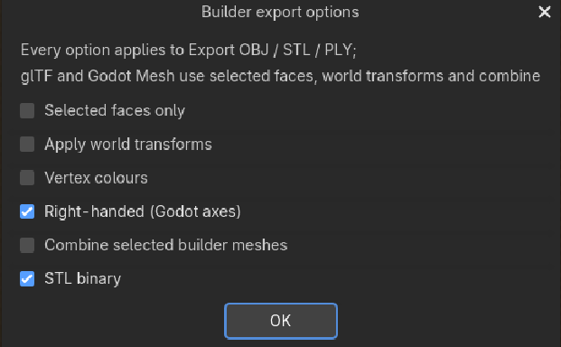
Every option applies to OBJ / STL / PLY; glTF and Godot Mesh use only Selected faces, world transforms and Combine.
Selected faces only
Export just the faces you've selected.
- Default
- off
Apply world transforms
Bake the object's position / rotation / scale into the file.
- Default
- off
Vertex colours
Include painted vertex colours.
- Default
- off
Right-handed (Godot axes)
Use Godot's axis convention.
- Default
- on
Combine selected builder meshes
Write several selected meshes as one.
- Default
- off
STL binary
Write compact binary STL instead of text.
- Default
- on
In Roblox, custom shapes are modelled in Blender and imported as MeshParts. Here you can keep editing the mesh live forever — or export it to glTF / OBJ / STL and bring it back as a normal Godot mesh node (or use Bake to MeshInstance3D). How to use the result as a tile or prop is on page 12.
Options: Pixel Builder Preferences
The Options dialog (from the Builder menu) holds every builder preference. Reset to Defaults at the bottom puts everything back.
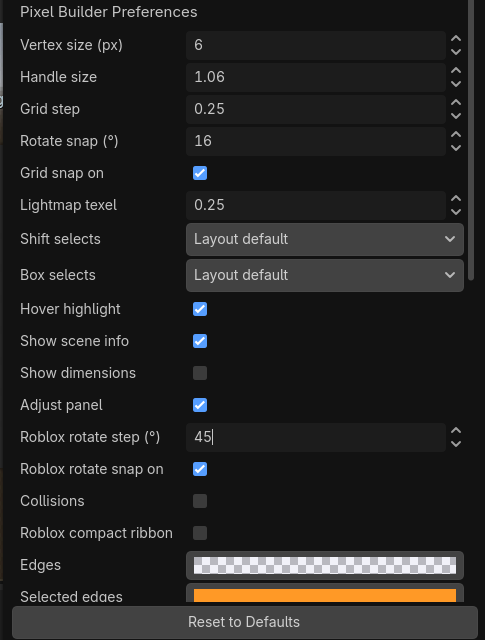
| Field | Default | What it does |
|---|---|---|
| Vertex size (px) | 6 | Size of the vertex handles in Vertex mode. |
| Handle size | 1.06 | Scale of the move / rotate / scale handles (1 = 64 px arms). |
| Grid step | 0.25 | Grid snap step the builder starts with ([ / ] halve / double it while editing). |
| Rotate snap (°) | 16 | Rotate-handle snap step while grid snapping is on (0 = free). |
| Grid snap on | ✓ | Start with grid snapping enabled. |
| Lightmap texel | 0.25 | Texel size for the lightmap UV2 unwrap on Bake / glTF export (0 = skip). |
| Shift selects | Layout default | Shift+click / box = Add, Subtract or Toggle. MST toggles, Modeler adds. |
| Box selects | Layout default | Intersect (box touches) or Complete (fully inside). MST = Complete, Modeler = Intersect. |
| Hover highlight | ✓ | Highlight the face / edge / vertex under the cursor. |
| Show scene info | ✓ | Vertex / edge / face counts and selected counts in the viewport. |
| Show dimensions | ✗ | Show the size of the selection's bounding box. |
| Adjust panel | ✓ | Show the live Adjust panel after Extrude / Inset / Bevel / … (off = apply at once). |
| Roblox rotate step (°) | 45 | Rotate-snap step of the Roblox ribbon's Snap group. |
| Roblox rotate snap on | ✓ | The Roblox ribbon's rotate-snap checkbox. |
| Collisions | ✗ | Roblox drag: a dragged part stops at the first part it would overlap. |
| Roblox compact ribbon | ✗ | Ribbon shows icons only (labels move to tooltips); the Model tab fits one row. |
| Edges / Selected edges / Hovered edge | colour | Wireframe, selected and hovered edge colours. |
| Vertices / Selected vertices / Hovered vertex | colour | Vertex-handle colours. |
| Selected faces | colour | Tint of selected faces. |
Recipes
Hollow anything (box, bin, planter)
Select the top face → I Inset → E Extrude with a negative Dist. That's the crate's core move.
Rounded edges
Click one edge → L to take the loop → Ctrl+B, Segs 3+, B profile 0.5. For a chunky pixel-art look, use Segs 1 (a chamfer) and Faceted shading.
Panel lines and trim bands
Ctrl+R a loop around the side, select the band of faces it creates (Alt+L ring / G grow help), then I Inset with Individual off and E a small negative Dist.
Legs and handles
Loop-cut to make a small face where the leg goes, select it, E Extrude. Individual extrude pulls several faces out separately.
A different colour on each face
Turn Roblox UI off → Materials → + Slot (or + Preset) → B Paint, pick colours in the bottom strip, click faces. Shift+click floods a flat area.
Check the scale with a grid
+ Preset → Grid textures the mesh so you can judge size and see stretched UVs. Swap it for the real material later.
Make a part hard to see visible again
Against a bright sky a Medium Stone Grey part can blend in. Give it a colour, or model in an empty scene and bring it into your level afterwards.
Something went wrong
Esc during an Adjust panel throws the operation away; afterwards, Ctrl+Z — every operation is one step in the History dock.
Roblox habits, translated
| In Roblox Studio you… | Here you… |
|---|---|
| Resize a Part with one Scale handle to stretch it | Face mode, select that face, E Extrude (adds new geometry) or drag it with Move (stretches what's there). |
| Can't edit faces, edges or vertices at all | Use the four modes on the Edit tab — like Blender's edit mode. |
| Use Union / Negate to cut shapes | Same booleans on the Model tab and right-click menu, but the result is an editable mesh, not a CSG part. |
| Import a MeshPart from Blender | Model it here, or Export to glTF / OBJ / STL and bring it back as a mesh node. |
| Set Material + Color in Properties | Color palette for the whole part; material slots + Paint for per-face colour. |
| Press F to focus a Part | Still F in the Roblox layout (Fill hole is Alt+F there). |
| Press 1–5 for tools | Same in the Roblox layout; the modes are Alt+1–4. |
Check yourself
You select a face, press E and nothing happens. What two things should you check?
That the mouse is over the 3D view (shortcuts only go to the panel under the pointer), and that you're in a mode that supports Extrude (Face or Edge) with something actually selected — the status line should say selected: 1 faces. A greyed ribbon button's tooltip names the missing mode.
How do you dig a hole into the top of a box?
Face mode, select the top, I Inset to make an inner face, then E Extrude it with a negative Dist.
You click one face with the Paint tool and the whole part changes colour. Why, and how do you paint just one face?
The part has 0 material slots, so colour is per-mesh. Switch to MST or Modeler, add a slot with + Slot or + Preset, then paint — each face now paints on its own.
Why should you set a part's Size before extruding and bevelling it?
Changing Size later rebuilds the box and replaces your element edits (Undo can bring them back).
Related pages
- 9 · Greyboxing with the Roblox UI — the Model tab: parts, moving, booleans.
- 11 · Importing models — bringing exported glTF / OBJ files back in.
- 12 · Using models: tiles, foliage & props — placing your crate in the world.
- 14 · Shortcuts & Roblox→Godot glossary
- 15 · Troubleshooting & FAQ